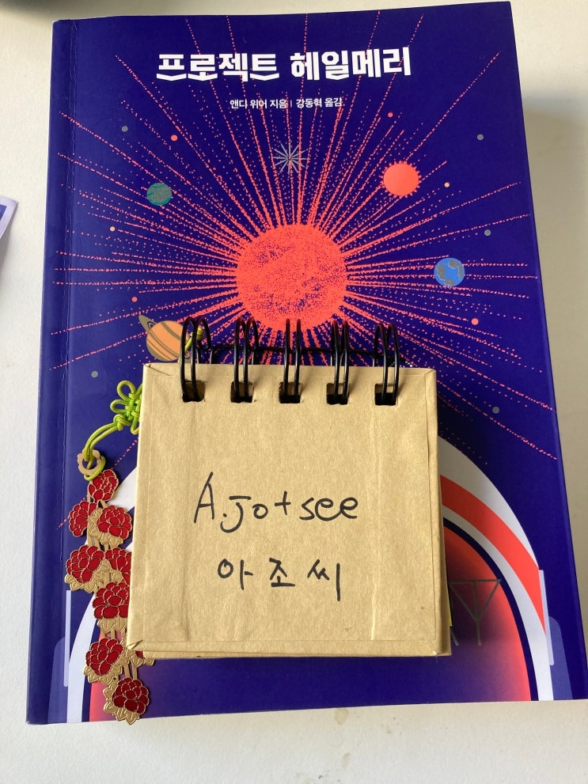

- 소장점수10/5점

친구가 선물을 해줘서 읽게 된 책.
제가 마션 작가의 팬인걸 알고 무려 630페이지 짜리 (심지어 꽉찬 글씨) 책을 선물로 보내왔습니다.
"책이 뭐가 이래 두껍나" 라고 생각도 잠시!
읽자마자 빨려들어가는 엄청난 흡입력에 3일만에 책을 다 읽고 끝냈습니다.
이야기 시놉시스는 대충 아래와 같다
누가 이렇게 병맛으로 잘 만들었어?
38억명의 남은 인류를 구하기 위해 스스로 (?) 타우 항성의 시스템으로 편도 자살임무를 떠난 기억상실증에 걸린 생물과
학자 겸 초딩 선생님의 이야기인데, 메멘토에서 나오는 흑백영상과 컬러 영상의 교차편집을 따라 주인공이 어떻게 이 여행
을 시작하게 되었는지 미스터리를 파해치면서 지구를 구하기 위한 운명적인 우정의 스토리를 그린다.
원래 아조씨가 좋아하는건 파괴! 쎾쑤! 망가! 뭐 이런건데,
이렇게 잔잔한 두 종족 생존자들의 우정도 충분히 재미있다는 생각이 들었다.
특히 두 종족이 서로의 언어를 배우는 장면이 압권임.
우리와 전혀 다른 세상에서 진화한 지능을 가진 생물이 어떻게 의사소통하는지, 그리고 그들과는 어떻게 이야기 해야할지
재미있게 볼 수 있다.
그리고 작가인 앤디 위어 특유의 개드립은 뭐 말할필요도 없이 최고다!
아조씨도 책 보다가 엄청 웃었다!
마지막 감상은 외계인 식으로 남기겠음.
좋다! 좋다! 좋다!
이것은 스포일러. 질문?
에이드리안 언어